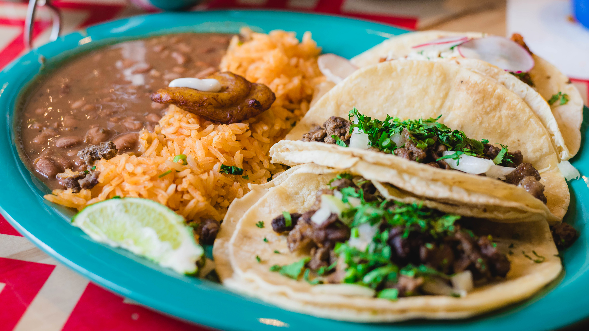
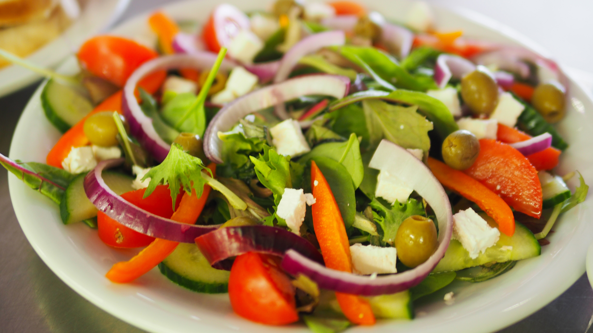

Providing the everyday home cook with videos and online tutorials on how to
prepare quick, healthy snacks and meals in 30 minutes or less.
Welcome to JLino's Kitchen ™ !
Enter your email address to receive links to new videos and online tutorials:
Avocado Tomato Salad

Prep Time: 10 minutes
Ingredients:
- 1 medium sized Avocado
- 1 Small Roma Tomato
- 1 flour tortilla
- 4 oz. corn
- 1/4 cup of Cilantro
- 1/2 lemon
- Salt & Pepper to taste
Fajita Tacos Plate
Prep Time: 30 minutes
Ingredients:
- 6 oz of Beef skirt (Beef Fajitas)
- 3 Corn Tortillas
- 1/4 cup of Cilantro
- 1/4 cup of white onions
- 1/4 cup of Cilantro
- 1/2 cup long grain rice
- 8 oz of Re-fried Beans
- 1 tsp of Garlic powder
- 1 tsp of Cumin
- 1 tbsp of Knorr chicken flavoring
- 1 lemon wedge
House Salad
Prep Time: 6 minutes
Ingredients:
- 2 cups Green Leaf Lettuce
- 1/2 Cup Spinach Leaf
- 1/2 Salad Tomato
- 1/2 of a small cucumber sliced
- 1/4 cup Red Bell Pepper
- 1 slice of Red Onion
- 1/4 cup of Cilantro
- 1/4 cup Green Olives
- 2 oz of Feta Cheese (cubed)